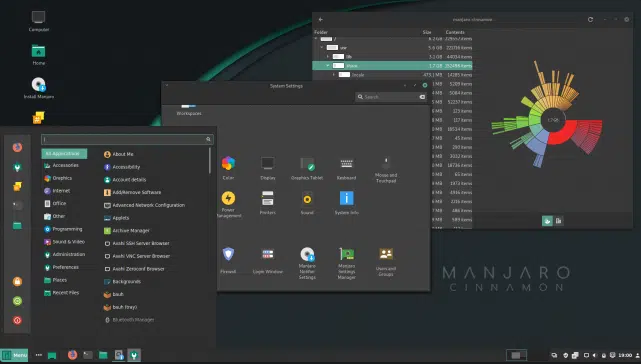

Altamente personalizáveis, os ambientes de Desktops para Linux não possui um padrão. Ainda que com o mesmo nome, cada distribuição Linux costuma dar seu toque final. E assim, com uma sombra aqui, um pacote de ícones ali, o ambiente de Desktop ganha admiradores e até quem seja bom no assunto de personalização. No entanto, nem só de beleza vive o ambiente. A estabilidade deles também conta muito, afinal ninguém quer aplicações travando ou problemas de compatibilidade em troca de apenas beleza. Enfim, conheça os mais populares ambientes de Desktops Linux.
KDE (K Desktop Environment) é uma comunidade internacional de software livre produzindo um conjunto de aplicativos multiplataforma projetados para funcionar em conjunto com sistemas GNU/Linux, FreeBSD, Solaris, Microsoft Windows e Apple Mac OS X (Estando em Desenvolvimento uma versão para Android). Ela é mais conhecida pela sua área de trabalho Plasma, um ambiente de trabalho fornecido como o ambiente padrão em muitas distribuições, com o GNU/Linux. A imagem acima mostra a Distro SparkyLinux, uma distribuição baseada em Debian, ela traz um ambiente baseado em KDE, considerado por muitos como ideal para iniciar no mundo open source, isso por ter uma aparência mais enxuta e intuitiva.
GNOME (acrônimo para GNU Network Object Model Environment) é um projeto de software livre abrangendo o Ambiente de Trabalho GNOME, para os usuários, e os desenvolvedores. O projeto dá ênfase especial a usabilidade, acessibilidade e internacionalização. O Gnome é um dos Desktop Enviroments mais populares de todos os tempos, não se limita apenas à interface, mas a diversas aplicações que compõem toda ela, como por exemplo, o gerenciador de arquivos Nautilus, considerado um dos grandes destaques.
Unity foi uma interface para o ambiente desktop, desenvolvido pela comunidade Ayatana e adaptado pela Canonical para o seu sistema operativo Ubuntu. O Unity estreou na versão para netbook do Ubuntu 10.10 e foi desenhado inicialmente para fazer um uso mais eficiente do espaço das telas limitadas dos netbooks, porém devido ao sucesso tornou-se a interface padrão do Ubuntu 11.04 que também incluía ainda o GNOME como opção. Ele foi desenhado exclusivamente para Ubuntu, porém, diferente do GNOME, KDE, Xfce e LXDE, o Unity não incluía aplicações, já que foi feito para usar programas em GTK+ (GUI) já existentes. A partir da versão 11.10 do Ubuntu, o Unity passou a ser a única interface padrão. No dia 5 de Abril de 2017, foi anunciado que o Unity não seria mais desenvolvido. A partir da versão 18.04 LTS, o Ubuntu vem como desktop padrão o GNOME. No entanto, há um projeto paralelo que mantém o Unity vivo até hoje. Além disso, o Unity ainda pode ser instalado pois permanece ativo nos repositórios do Ubuntu.
Como o fator distintivo do Linux Mint, o Cinnamon recebeu uma cobertura favorável da imprensa, em particular por sua facilidade de uso e curva de aprendizagem suave. Com relação ao seu modelo de design, o Cinnamon é semelhante aos ambientes de desktop: GNOME 2, GNOME Flashback, MATE e Xfce. É a interface padrão do Linux Mint, mas também está disponível em outras distribuições GNU/Linux, como Fedora, Manjaro Linux, Debian, openSUSE, Sabayon Linux, Ubuntu entre outras. Porém, foi adotado por muitos outras distribuições como o Manjaro (mostrado abaixo): 
XFCE é um ambiente de trabalho gráfico, executado sobre o sistema de janelas X (daí vem a origem de Xfce) em sistemas Unix, seus derivados e Linux. Assim como GNOME 2, o Xfce utiliza a biblioteca GTK+2 para fazer a interface com o usuário, o que os tornam ligeiramente parecidos. Porém, não se engane, ele é composto por diversos componentes que combinados fornecem um ambiente de trabalho completo. Além disso, o Xfce pode funcionar em hardware com poucos recursos ou de baixa configuração.
MATE é um ambiente de desktop derivado (como a maioria) do GNOME. Foi criado devido à mudança “agressiva” de visual do seu sucessor, GNOME 3, que não agradou todos. Pode ser descrito como a re-leitura do GNOME 2, com os recursos do GNOME 3, porém, com o visual intuitivo e bem mais tradicional que sua versão anterior. É distribuido oficialmente pelas distribuições: Arch Linux, Gentoo, Mageia, openSUSE, Fedora, Linux Mint, Debian, entre outras. Também, utiliza somente a biblioteca GTK+ 3 desde a versão 1.18. Não é um ambiente que se tenha muito o que falar, porém, utiliza o Caja, Gerenciador de arquivos baseado no Nautilus, Pluma, Editor de textos, baseado no Gedit, entre outros aplicativos bastante funcionais e de fácil manuseio.
O I3 faz uso extensivo de atalhos de teclado para controlar diferentes aspectos do seu ambiente. Isso inclui abrir o terminal e outros programas, redimensionar e posicionar janelas, alterar layouts e até mesmo sair do i3. Quando você começa a usar o i3, precisa memorizar alguns desses atalhos para se locomover e, com o tempo, usará mais deles. No i3, uma área de trabalho é uma maneira fácil de agrupar janelas. Você pode agrupá-los de diferentes maneiras de acordo com seu fluxo de trabalho. Por exemplo, você pode colocar o navegador em um espaço de trabalho, o terminal em outro, um cliente de e-mail em um terceiro, etc. Você pode até alterar a configuração do i3 para sempre atribuir aplicativos específicos aos seus próprios espaços de trabalho.